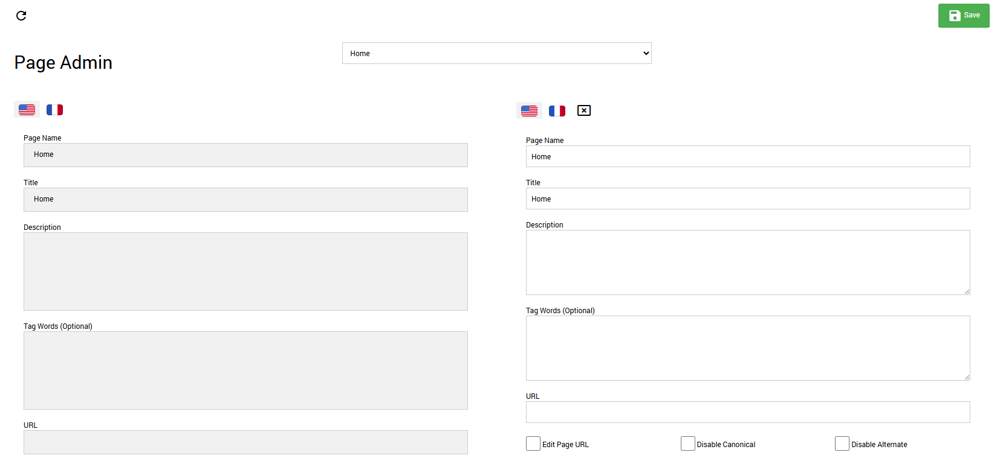

Page Localization
The RocketCDS suite provides a fast and efficient way to handle multilingual SEO by localizing page names and URLs. This feature is found in the Persona Bar under Rocket > Tools > Page Localization.
It is designed as a lightweight alternative to DNN's built-in content localization feature.
Why Use Rocket Page Localization?
- Speed and Simplicity: DNN's content localization creates a separate copy of a page for each language, which can be slow and complex to manage. The RocketCDS approach simply provides a way to assign a different title and URL to the same page for each language, which is much faster.
- SEO Focused: This tool focuses on the most critical elements for multilingual SEO: the page
titletag and the page URL. - No Need for DNN Content Localization: All Rocket modules are inherently multilingual. They can display content in multiple languages without needing separate versions of pages. For this reason, it is highly recommended that you do NOT turn on DNN's content localization feature when building a site with RocketCDS.
How to Use the Page Localization Tool
Using the tool is straightforward:
- Navigate to the Persona Bar and go to Rocket > Tools.
- Click on Page Localization.
- You will see a list of the pages on your portal. Use the dropdown to select the page you wish to localize.
- The tool will display a set of fields for each language that is active on your portal.
- For each language, you can enter a custom Page Name (which becomes the
<title>tag) and a custom URL. - Click Save to apply your changes.

The system will now automatically use the specified page name and URL when a user is viewing the site in that language, providing a better user experience and improved SEO without the overhead of DNN's full localization system.